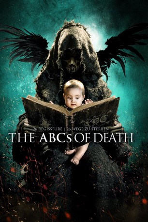
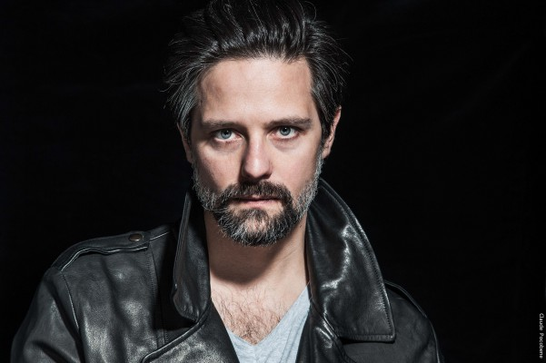

#3479 The ABCs of Death
Alternativ: 22 Ways to Die (Originaltitel)
 
 IMDB-Wertung: 4.7 / 10
IMDB-Wertung: 4.7 / 10  Metascore: 0
Metascore: 0 
The ABC's OF DEATH is an ambitious anthology film featuring segments directed by over two dozen of the world's leading talents in contemporary genre film. Inspired by children's educational ABC books, the motion picture is comprised of 26 individual chapters, each helmed by a different director assigned a letter of the alphabet. The directors were then given free reign in choosing a word to create a story involving death. Provocative, shocking, funny and ultimately confrontational; THE ABC's OF DEATH is the definitive snapshot of the diversity of modern horror. Drafthouse Films, Magnet Pictures and Timpson Films are proud to present this alphabetical arsenal of destruction orchestrated by what Fangoria calls "a stunning roll call of some of the most exciting names in horror across the world."
Jahr: 2012
Dauer: 129 Minuten
FSK: 18
Land: USA Studio: Magnet ReleasingTonspuren: DTS - ,
Untertitel: Deutsch,
Auflösung: 1080p (1920x1080) Größe: 10752 MB
Genre: Horror, Komödie
Regisseur: Kaare Andrews, Angela Bettis, Hélène Cattet, Ernesto Díaz Espinoza, Jason Eisener, Bruno Forzani, Adrián García Bogliano, Xavier Gens, Jorge Michel Grau, Lee Hardcastle, Noboru Iguchi, Thomas Cappelen Malling, Anders Morgenthaler, Yoshihiro Nishimura, Banjong Pisanthanakun, Simon Rumley, Marcel Sarmiento, Jon Schnepp, Srdjan Spasojevic, Timo Tjahjanto, Andrew Traucki, Nacho Vigalondo, Jake West, Ti West, Ben Wheatley, Adam Wingard, Yudai Yamaguchi
Drehbuch: Henry Gayden
Soundtrack:
Darsteller:
- Pablo Guisa Koestinger als Yeti, segment B is for Bigfoot
- Steve Berens als The Fighter, segment D is for Dogfight
 Erik Aude als Beat Down Dude, segment D is for Dogfight
Erik Aude als Beat Down Dude, segment D is for Dogfight- Lisa Lynch als Card Girl, segment D is for Dogfight
- Joshua Diolosa als College Kid, segment D is for Dogfight
- JLouis Mills als The Hooligan, segment D is for Dogfight
 Ingrid Bolsø Berdal als Frau Scheisse
Ingrid Bolsø Berdal als Frau Scheisse Jon Øigarden als Bertie the Bulldog, segment H is for Hydro-Electric Diffusion
Jon Øigarden als Bertie the Bulldog, segment H is for Hydro-Electric Diffusion- Tipper Newton als Baby Mama, segment: M is for Miscarriage
- Adam Wingard als Adam, segment Q is for Quack
 Simon Barrett als Simon, segment Q is for Quack
Simon Barrett als Simon, segment Q is for Quack Peter Pedrero als Hooded Man, segment S is for Speed
Peter Pedrero als Hooded Man, segment S is for Speed Neil Maskell als Lord Scanlon, segment U Is for Unearthed
Neil Maskell als Lord Scanlon, segment U Is for Unearthed Michael Smiley als Father Tom, segment U Is for Unearthed
Michael Smiley als Father Tom, segment U Is for Unearthed- Robin Hill als Geoff, segment U Is for Unearthed
- Kyra Zagorsky als Lainey, segment V is for Vagitus
 Fraser Corbett als Nezbit, segment V is for Vagitus
Fraser Corbett als Nezbit, segment V is for Vagitus Michael Rogers als Stoker, segment V is for Vagitus
Michael Rogers als Stoker, segment V is for Vagitus Daniel Bacon als Dr. White, segment V is for Vagitus
Daniel Bacon als Dr. White, segment V is for Vagitus- Elisabeth Rosen als Mrs. Van Arrant, segment V is for Vagitus
- Seth Ranaweera als Tech Tonic, segment V is for Vagitus
 Johnson Phan als Tech Tronic, segment V is for Vagitus
Johnson Phan als Tech Tronic, segment V is for Vagitus Jeremy Raymond als Tech Sonic, segment V is for Vagitus
Jeremy Raymond als Tech Sonic, segment V is for Vagitus- Laya Bella als Warrior, segment W is for WTF?
 Sissi Duparc als Gertrude, segment X is for XXL
Sissi Duparc als Gertrude, segment X is for XXL-  Iván González als Bobo, segment X is for XXL
- M@tch als Mastectomy
- Rurik Sallé als Bad Guy, segment X Is for XXL
- Eva Llorach als Woman, segment A is for Apocalypse
- Miquel Insua als Man, segment A is for Apocalypse
- Alejandra Urdiaín als Dulce, segment B is for Bigfoot
- Harold Torres als Erik, segment B is for Bigfoot
- Greta Martinez als Xochitl, segment B is for Bigfoot
- Matías Oviedo als Bruno, segment C is for Cycle
- Juanita Ringeling als Alicia, segment C is for Cycle
- Riley the Dog als The Dog, segment D is for Dogfight
- Chris Hampton als The Figther's Trainer, segment D is for Dogfight
- George Marquez als The Dog's Trainer, segment D is for Dogfight
- Imogen Mcaulay als The Baby, segment D is for Dogfight
- Eddie Griffith als The Goomba, segment D is for Dogfight
- Matt Bowler als Loopyloop, segment D is for Dogfight
- Luther Whang als The King of Dry Cleaning, segment D is for Dogfight
- Kelly Green als Rough Stuff, segment D is for Dogfight
- Dee Ledbetter als Grandmema Bookie, segment D is for Dogfight
- Alex Mcaulay als Old Hippie, segment D is for Dogfight
- Elizabeth Mcaulay als Strungout, segment D is for Dogfight
- Dallas Malloy als Female Boxer, segment D is for Dogfight
- Terry Smith als Junior, segment D is for Dogfight
- Tere Beckman als Beauty, segment D is for Dogfight
- Mark Devine als The Walk In, segment D is for Dogfight
Datei: X:\FSK18-Collections\ABCs of Death\ABCs of Death, The (2012, FSK18, 1920x1080).mkv seit 13.04.2016
Festplatte: FSK18
 Alle Filme aus Gruppe 'FSK18-Collections\ABCs of Death'
Alle Filme aus Gruppe 'FSK18-Collections\ABCs of Death'